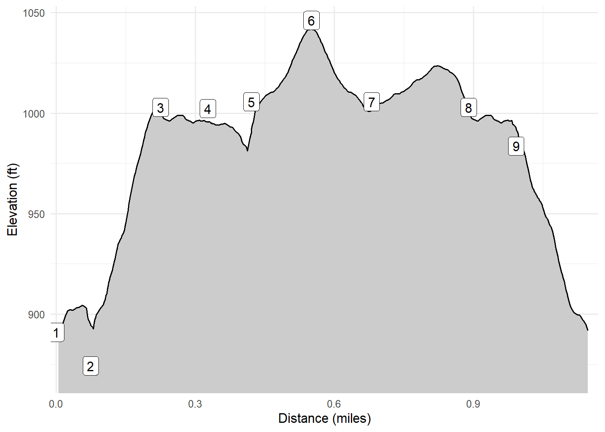

Pulpit Rock - Decorah, IA
On 19-Jan-2023 Cash and I stopped in Decorah to walk the short but beautiful Pulpit Rock Trail. Details are below.
Walk-Specific Map
Take Note
- Click on a segment to get specific information.
- Numeric labels correspond to the same labels in the elevation profile and summary information below.
Elevation Profile

Images

PLPT02: Pulpit Rock from below

PLPT02: Steps to view of Pulpit Rock

PLPT02: Pulpit Rock from above

PLPT02: Panoramic view from above Pulpit Rock

PLPT04: Headed back down to the parking area
GPX Download
A sanitized GPX file of our hike is here.
Summary Information
| NUM | trackID | Primary | Description | Type | Owner | Distance | CumDist | DeltaElev |
|---|---|---|---|---|---|---|---|---|
| 1 | PLPT01 | Pulpit Rock Tr | Parking area to | Trail | Public | 0.07 | 0.07 | 15 |
| 2 | PLPT02 | Pulpit Rock Tr | to | Trail | Public | 0.15 | 0.22 | 132 |
| 3 | PLPT03 | Pulpit Rock Tr | to | Trail | Public | 0.10 | 0.33 | -1 |
| 4 | PLPT07 | Pulpit Rock Tr | to | Trail | Public | 0.09 | 0.42 | -26 |
| 5 | PLPT08 | Pulpit Rock Tr | to Private Road | Trail | Public | 0.13 | 0.55 | 40 |
| 6 | PLPT08 | Pulpit Rock Tr | Private Road to | Trail | Public | 0.13 | 0.68 | -40 |
| 7 | PLPT06 | Pulpit Rock Tr | to | Trail | Public | 0.21 | 0.89 | 1 |
| 8 | PLPT03 | Pulpit Rock Tr | to | Trail | Public | 0.10 | 0.99 | -1 |
| 9 | PLPT04 | Pulpit Rock Tr | to Parking area | Trail | Public | 0.17 | 1.16 | -97 |